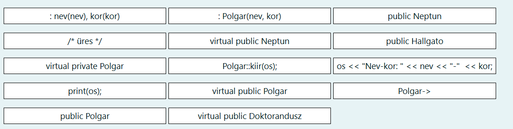
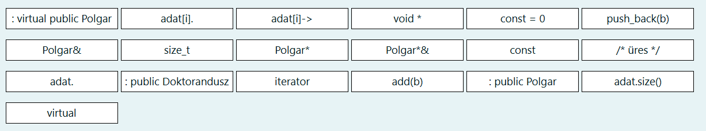
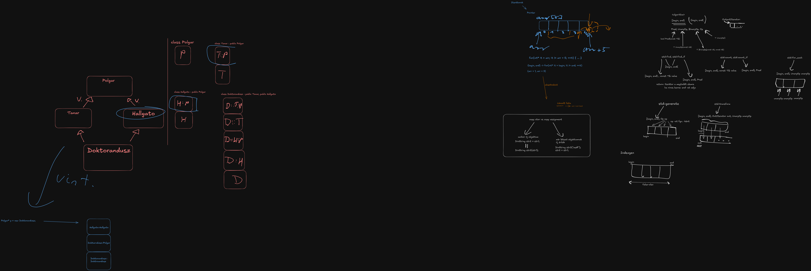

Gyémánt öröklés feladat
Új neptun rendszer (Neptun) kerül fejlesztésre, heves viták után a vezetőség a C++ mellett tette le a voksát. Feladatunk most egy demo program készítése a rendszer modellezésére, amit később lehet hogy tovább bővítünk. Szeretnénk nyilvántartani minden egyetemi polgárt (Polgar), minden polgárnak van neve és életkora. Az egyetemen a polgárokhoz tartoznak a Hallgatók és a Tanárok is. A hallgatók számon tartják az eddig teljesített kreditek összegét, míg a tanárok az eddig konzultált hallgatók számát. Speciális helyzetben vannak a Doktoranduszok, akik hallgatók és tanárok is egyben. Mindenkinek kiírható a neve és életkora, valamint a hallgatóknál a teljesített kredit, tanároknál a konzultált hallgatók száma. Doktorandusz viselkedhet tanárként és hallgatóként is. Minden egyednél kiírhatók (kiir()) ezek az értékek a kapott ostream paraméterre. A Neptun rendszerbe új polgárt bevinni a hozzaad() metódussal lehet, illetve paraméterben megadott adatfolyamra ki lehet listázni az összes egyetemi polgár minden adatát (listaz()). Ha a Neptun rendszer megsemmisül, a benne tárolt adatok is elvesznek.
Gondoljuk végig!
Az modellünk a következő:
- Van egy
Polgarősosztály - Belőle származik a
Tanarés aHallgato - A
DoktoranduszegyszerreTanarésHallgatois
Ez gyémánt öröklés probléma! A Doktorandusz osztályban a Polgar memóriaképe kétszer, a Tanar és Hallgato osztályon keresztül is megjelenik.
A megoldás: virtuális ős kell a Tanar és Hallgato osztálynak!
Tanár
#ifndef TANAR_H_DEFINED
#define TANAR_H_DEFINED
#include "polgar.h"
class Tanar : [/*...*/] {
int konzultalt; //eddig konzultált hallgatók száma
public:
Tanar(string nev, int kor, int konzultalt) [/*...*/], konzultalt(konzultalt) {}
void kiir(ostream& os) const {
[/*...*/] // kiírjuk a nevét és a korát
os << ", konzultalt: " << konzultalt;
}
};
#endif

Megoldás
#ifndef TANAR_H_DEFINED
#define TANAR_H_DEFINED
#include "polgar.h"
class Tanar : [virtual public Polgar] { //virtual base, mivel gyémánt probléma van.
int konzultalt; //eddig konzultált hallgatók száma
public:
Tanar(string nev, int kor, int konzultalt) [: Polgar(nev, kor)], konzultalt(konzultalt) {}
void kiir(ostream& os) const {
[Polgar::kiir(os);] // nem duplikálunk kódot, ősbe delegálás
os << ", konzultalt: " << konzultalt;
}
};
#endif
Neptun
#ifndef NEPTUN_H_DEFINED
#define NEPTUN_H_DEFINED
#include <vector>
#include "polgar.h"
class Neptun [/*...*/] {
std::vector<[/*...*/]> adat;
public:
void hozzaad([/*...*/] b) {
adat.[/*...*/];
}
void listaz(ostream& os) [const] {
for ([/*...*/] i = 0; i < [/*...*/]; ++i) {
[/*...*/]kiir(os);
os << std::endl;
}
}
[/*...*/] ~Neptun(); // külön valósítjuk meg
};
#endif

Megoldás
#ifndef NEPTUN_H_DEFINED
#define NEPTUN_H_DEFINED
#include <vector>
#include "polgar.h"
class Neptun [/* üres */] {
std::vector<[Polgar*]> adat;
public:
void hozzaad([Polgar*] b) {
adat.[push_back(b)];
}
void listaz(ostream& os) [const] {
for ([size_t] i = 0; i < [adat.size()]; ++i) {
[adat[i]‑>]kiir(os);
os << std::endl;
}
}
[/* üres */] ~Neptun(); // külön valósítjuk meg
};
#endif
Adapter
PyTomb std::vector adapter
Az adapter tervezési minta lényege a következő:
Van egy osztály, ami elvár egy interfészt egy másik osztálytól (Adaptee), viszont az Adaptee osztály nem felel meg ennek az interfésznek. Ezért készítünk egy új osztályt (Adapter), aki megvalósítja az elvárt interfészt az Adaptee osztály felhasználásával.
A jelenlegi feladatban egy PyTomb nevű adaptert kell elkészíteni, ami az std::vector<T> osztály operator[] tagfüggvényét változtatja meg olyan módon, hogy negatív index esetén a tömböt hátulról indexel.
Elvárás továbbá az is, hogy a PyTomb és std::vector kompatiblisek legyenek.
Gondolatmenet
A kompatibilitás miatt fontos, hogy az std::vector<T> -ből le kell származni. A C++ name lookup szabályai miatt ha egy template paramétertől függő ősosztályból szeretnénk tagfüggvényt hívni, akkor ki kell írni a teljes ősosztályt elé, pl std::vector<T>::at(idx);
Erre azért van szükség, mivel a template olvasásakor a fordító a neveket nem keresi a template paraméterektől függő ősosztályokban (hiszen még nem tudja, hogy melyik template paraméterekkel van használva a sablon, és explicit specializációk miatt nem tudja, melyik specializációban keressen.)
template<typename T>
struct Foo{
void f() {}
};
template<>
struct Foo<int>{
void k() {}
}
template<typename T>
struct Bar : Foo<T>{
void b() { f(); }
/*hiba, nincs találat f-re, mivel Foo<T> ősosztály függ T-től,
és nem biztos, hogy minden Foo<T> -ben létezik f(), pl itt Foo<int> -ben nem.
*/
};
Megoldás
template<typename T>
class PyTomb : public std::vector<T> /*dependent base class! figyelni kell a nevekre*/{
public:
using std::vector<T>::vector; // minden vector nevű fgv. átvétele az std::vector<T> -ből, "ctor öröklés"
T& operator[](long long idx){
if(idx >= 0){
return std::vector<T>::at(idx); // at tagfgv. csinál bounds checkinget is, ezt nekünk nem kell megcsinálni
}else{
return std::vector<T>::at(std::vector<T>::size() + idx);
}
}
const T& operator[](long long idx) const{ //ugyanez const-ra is!
if(idx >= 0){
return std::vector<T>::at(idx); // at tagfgv. csinál bounds checkinget is, ezt nekünk nem kell megcsinálni
}else{
return std::vector<T>::at(std::vector<T>::size() + idx);
}
}
}
Iterátorok
Dinamikus tömb iterátor
Egészítse ki a lenti dinamikus generikus tömböt iterátorral! Az iterátort a generikus osztály belső publikus osztályaként implementálja! A megadott kódrészletekhez ne nyúljon, csak kiegészítheti azt!
Az iterátornak a következő funkciókkal kell rendelkeznie:
- paraméter nélküli konstruktor: nullptr állít be (az iterátor érvénytelen)
- egyparaméteres konstruktor: konstans GenDinTomb referenciát vesz át, a tömb elejére állítja az iterátort
- kétparaméteres ctor: konstans GenDinTomb referenciát és egy size_t indexet vesz át, az iterátort a tömb indexedik elemére állítja
- dereferáló () operátor: referenciát ad vissza, ha az iterátor érvénytelen (nullptr, túlcímzés), dobjon const char típusú kivételt!
- Összehasonlító operátorok (== és !=), összehasonlít két iterátort, logikai értékkel tér vissza, elvárt módon működjön.
- Preinkremens operátor: Ha az iterátor nem érvénytelen, akkor a következő elemre mutat a tömbben, különben nem csinál semmit.
#include <iostream>
template <typename T>
class GenDinTomb {
T* elements; // pointer a din. foglalt adatra
size_t n; // méret
public:
GenDinTomb(size_t n, const T& a = T());
GenDinTomb(const GenDinTomb&);
GenDinTomb& operator=(const GenDinTomb&);
size_t size() const { return n; }
void insert(const T& e);
//segédfgv. kiírja a tömb méretét és elemeit
void printDbg() const;
//--------------------------csak ezt szerkesztheti-------------------------
class iterator {
//ezt kell megírni
};
//------------------------------eddig-------------------------------
};
Megoldás
Az iterátor a pointerek absztrakciója. Az interfészük hasonló a pointerekhez, viszont extra funkcionalitást valósítanak meg. A feladatban bounds checking-et kell implementálni, azaz figyelni kell, hogy valóban a tömb egy elemét érjük el az iterátoron keresztül. Ehhez biztosan kelleni fog 2 tagváltozó: A jelenlegi elemet azonosító (pointer v. index), valamint a tömb végét azonosító (pointer v. index). Ebben a megoldásban a dinamikus tömbre mutató pointer + index a tömbbe megoldást választottam, de nem ez az egyetlen jó megoldás.
class iterator {
GenDinTomb<T>* tomb; //erre a tömbre vonatkozik az index
size_t current_idx; //az elem indexe amire az iterátor mutat
public:
iterator() : tomb(nullptr), current_idx(0) {}
iterator(GenDinTomb& tomb) : tomb(&tomb) {}
iterator(GenDinTomb& tomb, size_t idx) : tomb(&tomb), current_idx(idx) {}
T& operator*() {
if(tomb == nullptr || current_idx >= tomb.size()){ // ha invalid a tömb vagy invalid az index akkor hibát kell dobni
throw "Helytelen indirekcio";
}
return tomb[current_idx];
}
bool operator==(const iterator& rhs) const {
return tomb == rhs.tomb && current_idx == rhs.idx;
}
bool operator!=(const iterator& rhs) const {
return !(*this == rhs);
}
iterator& operator++(){
if(tomb != nullptr && current_idx < tomb.size()){ // ha valid a tömb és valid az iterátor akkor léptetjük egyet (valid iterátor: tömbbe vagy egyel a tömb után mutat)
current_idx++;
}
return *this;
}
};
STL eszközök
Indexgen
Készítsen egy olyan függvényt (indexgen néven), ami két paramétert kap: Egy kezdő számértéket (int), valamint egy felső határt (int). A függvény feladata egy olyan tömb (std::vector
Használja fel ehhez az std::generate függvényt! For vagy while ciklust ne használjon! A megoldáshoz további segédfüggvényt, osztályt is felvehet!
Példa a használatra:
std::vector<int> t = indexgen(0, 4);
for (int k : t)
std::cout << k << ','; //0,1,2,3,
B. feladatrész: Alakítsa át úgy a függvényt, hogy tetszőleges típusokra működjön, a posztinkremens és a kivonás művelet értelmezve van a típuson! (persze ekkor a függvényfejléchez hozzányúlhat)
Gondolatmenet
Az std::generate függvény két iterátort, valamint egy hívható objektumot vesz át (generátor). A két iterátor közt megy végig, és meghívja a generátort, és az iterátoron keresztül beállítja az adott elemet a generátor visszatérési értékére.
// ez történik a generate belsejében
for(auto it = begin; it != end; ++it){
*it = generator();
}
Megoldás
A. feladatrész: int típusra
struct CounterFunctor{
CounterFunctor(int x) : x(x) {}
int operator()() {
return x++;
}
private:
int x;
};
std::vector<int> indexgen(int also, int felso){
std::vector<int> result(felso-also); //ebben lesz az eredmény, a ctor-ban a méretet adjuk meg, hogy a begin és end jók legyenek.
CounterFunctor gen(also); // készítünk egy számláló generátort ami az alsó értékrők indul
std::generate(result.begin(), result.end(), gen); // átadjuk az eredmény range-t és a generátor példányt. NEM gen(), hanem gen !!
return result;
}
B. feladatrész: int helyett minden típusra
template<typename T>
struct CounterFunctor{
CounterFunctor(const T& x) : x(x) {}
T operator()() {
return x++;
}
private:
T x;
};
template<typename T>
std::vector<T> indexgen(const T& also, const T& felso){
std::vector<T> result(felso-also); //ebben lesz az eredmény, a ctor-ban a méretet adjuk meg, hogy a begin és end jók legyenek.
CounterFunctor<T> gen(also); // készítünk egy számláló generátort ami az alsó értékrők indul. Nem kell a <T>, de kiírhatjuk
std::generate(result.begin(), result.end(), gen); // átadjuk az eredmény range-t és a generátor példányt. NEM gen(), hanem gen !!
return result;
}
Boolindexing
Készítsen egy olyan függvényt boolindexing néven, ami két paramétert kap: egy vector<int> tömböt, valamint egy predikátumot. A függvény feladata egy olyan logikai tömb (std::vector<bool>) visszaadása, amiben az 'idx' indexű helyen akkor áll igaz, ha az eredeti tömbben az idx helyen lévő értékre a predikátum igaz, különben hamis. Implementálja a megoldáshoz a "paros" predikátumot, ami akkor ad vissza igazat, ha a paraméterül kapott egész szám páros.
Használja fel ehhez az std::transform függvényt! For vagy while ciklust ne használjon! A megoldáshoz további segédfüggvényt, osztályt is felvehet!
Példa a használatra:
std::vector<int> t = { 1, 2, 3, 4 };
std::vector<bool> tb = boolindexing(t, paros);
for (bool k : tb)
std::cout << k << ','; //0,1,0,1,
B. feladatrész: int helyett minden típusra
Gondolatmenet
Az std::transform függvény átvesz három iterátort valamint egy hívható objektumot (művelet). A három iterátor a következőt jelenti:
* bemeneti range eleje
* bemeneti range vége
* kimeneti range eleje
A művelet pedig a bemeneti range elemtípusát (Az A. feladatban int) veszi át, és a kimeneti range elemtípusát adja vissza (ebben a feladatban bool).
Azaz a transform egy másik, "kimeneti" iterátorral határozza meg, hogy hova kezdi el írni az eredményeket.
Az eredményeket úgy kapja meg, hogy a műveletet meghívja a bemeneti range összes elemére egyesével és a visszaadott értéket kiírja a kimeneti range-be.
Belül valami ilyesmi történik:
for(auto it = begin, it != end; ++it){
*out = muvelet(*it);
++out;
}
Megoldás
A. feladatrész
template<typename Op>
std::vector<bool> boolindexing(const std::vector<int>& v, Op muvelet){
std::vector<bool> result(v.size());
std::transform(v.begin(), v.end(), result.begin(), muvelet); // input begin, input end, output being, binary op
return result;
}
A példa paros művelet pedig egy egyszerű függvény lesz:
bool paros(int x){
return x % 2 == 0;
}
B. feladatrész:
Csak az int-et kell T -re cserélni:
template<typename T, typename Op>
std::vector<bool> boolindexing(const std::vector<T>& v, Op muvelet){
std::vector<bool> result(v.size());
std::transform(v.begin(), v.end(), result.begin(), muvelet); // input begin, input end, output being, op
return result;
}
Egyéb CodeRunner feladatok
MySet
Implementáljon egy generikus tárolót, ami halmazként fog működni. Az osztályt MySet néven implementálja. A halmazban tárolt elemek típusát és annak méretét (size_t) sablonparaméterként lehet beállítani. Alapértelmezetten a halmaz mérete 10. Az elemeket egy fix méretű tömbben a sablonozás segítségével kell eltárolni, ezt a tömböt elements-nek nevezze el. Feltételezheti, hogy a megadott típusoknak van alapértelmezett konstruktora, továbbá érvényes rajtuk az összehasonlító (==) operátor. Figyeljen a láthatóságra. Továbbá:
- contains metódus: igaz logikai értéket ad vissza, ha a paraméterül kapott elem benne van a halmazban már, különben hamis értéket.
- insert metódus: belerakja a halmazba, a kapott értéket (ha nem volt benne). Ha nem volt benne, viszont a halmaz kapacitása (sablonparaméter) már nem elég, akkor const char* kivételt dob. Ha a paraméterül kapott érték már szerepel a halmazban, nem csinál semmit.
- size metódus: visszaadja az eddig tárolt elemek számát.
- capacity metódus: visszaadja a halmaz kapacitását (mennyi különböző elemet lehet maximum belerakni)
Gondolatmenet
A feladat lényege a nem-típus sablonparaméter használata. Mivel a sablonparaméter fordítási időben konstans, ezért lehet tömb méretéhez használni. A feladathoz éppen ezért nincs szükség dinamikus memóriakezelésre.
Megoldás
template<typename T, size_t C = 10> // milyen típust és max mennyit tárol
class MySet{
T elements[C]; // C fordítási időben konstans tehát használható tömb méretként
size_t meret; // tényleges méret, amennyit beleraktunk már
public:
MySet() : meret(0) {} // meret 0-ról induljon
bool contains(const T& t) const {
for(size_t i = 0; i < meret; ++i){
if(elements[i] == t){
return true;
}
}
return false;
}
void insert(const T& t){
if(!contains(t)){ // contains felhasználása!
if(meret >= C){
throw "Tele van";
}
elements[meret] = t;
++meret;
}
}
size_t size() const {
return meret;
}
size_t capacity() const {
return C;
}
};
Serializable Complex
Készítsen szerializálható osztályt a Complex és a Serializable osztály felhasználásával: A SComplex legyen kompatibilis mindkét osztállyal! A fenti osztályok deklarációja a következő:
class Complex {
protected:
float r, i; // r+ij
public:
Complex(float r, float i);
float getR() const;
float getI() const;
};
struct Serializable {
virtual void write(std::ostream& os) const = 0;
virtual void read(std::istream& is) = 0;
};
Az SComplex osztály write függvénye a stream-re a következő formátumban írja ki az objektum adattagjait: "SComplex [r]+[i]j\n" (a [x] helyére az adott adattag kerül, például "SComplex 2+3j"). A read függvény pedig ilyen formában olvassa be a kiszerializált adatokat. Ha a read függvény rossz formátumot kap (például rossz név vagy nem +/j szerepel), akkor kivételt dob a következő karakterlánccal: "error".
Megoldás
A szerializéció lényege, hogy a kiírással azonos formátumban olvassuk vissza az elemeket (ezt a feladat is elvárja). Mint a Seralizable, mind a Complex osztályból származtatunk, viszont a Complex osztályt csak felhasználjuk, nem kell belőle semmit sem újraimplementálni!
class SComplex: public Serializable, public Complex {
public:
SComplex(float r, float i): Complex(r, i) {} // Complex ctor-t csak meg kell hívni, nem kellenek újra az adattagok.
void write(std::ostream& os) const override {
os << "SComplex " << r << "+" << i << "j" << std::endl;
}
void read(std::istream& is) override {
std::string type_name;
char op;
char j;
is >> type_name >> r >> op >> i >> j;
if (op != '+' || j != "j" || type_name != "SComplex") {
throw "error";
}
}
};
A konzultáción készült whiteboard
